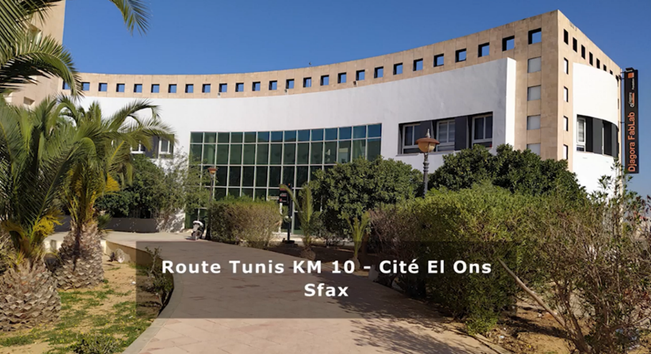
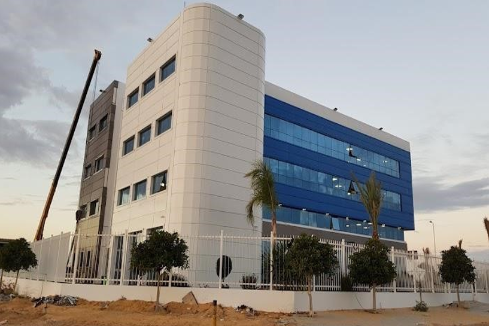

-
Stage de fin d'études
Lieu : Sfax, Tunisie
Durée : 4 mois
Entreprise : Djagora Foundation
Responsabilités : Développement d’une application web de détection d’âge à partir d’images faciales, de vidéos et de caméra utilisant l’apprentissage profond. J’ai intégré aussi le modèle FACENET pour son efficacité dans la détection et l’alignement des visages, améliorant ainsi la précision de la prédiction d’âge.
 -
Stage professionnel
Lieu : Sfax, Tunisie
Durée : 2 mois
Entreprise : Primatec Engineering
Responsabilités : Au cours de mon stage, j'ai été impliqué dans l'analyse des protocoles de communication d’automobile, notamment CAN, LIN, Flexray et Ethernet, en vue d’assurer une communication efficace entre les divers systèmes électroniques embarqués dans les véhicules.
 -
Stage d'initiation
Lieu : Mahdia, Tunisie
Durée : 1 mois
Entreprise : Tunisie Telecom
Responsabilités : J'ai eu l'occasion de découvrir les différentes technologies utilisées par Tunisie Telecom pour fournir des services de téléphonie et d'internet à large échelle. Pendant mon stage, j'ai participé à des projets de maintenance, observé le fonctionnement des réseaux, et assisté à des réunions techniques.